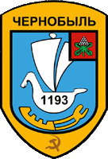
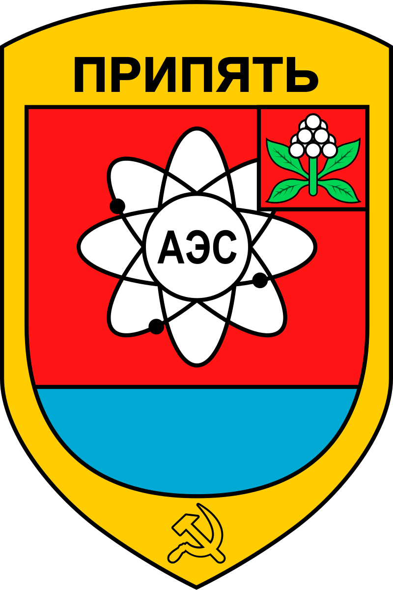
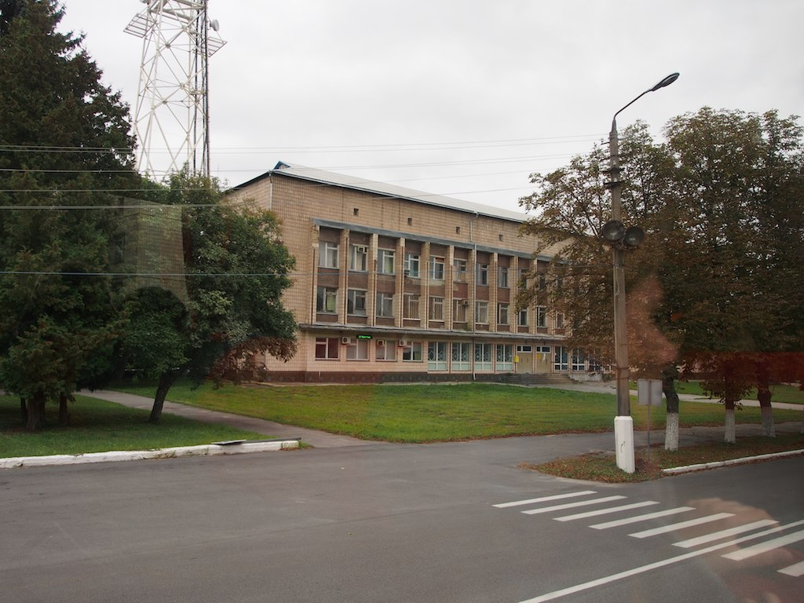
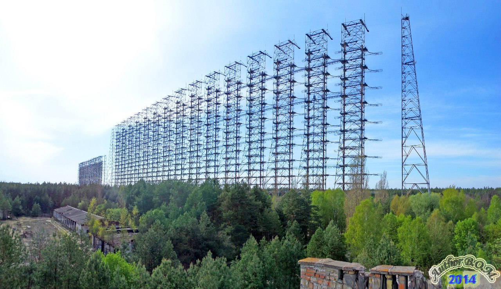
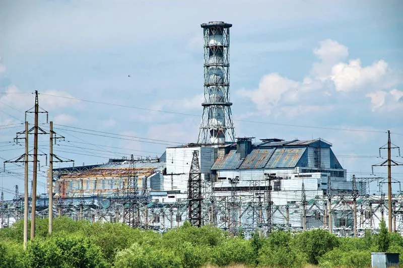
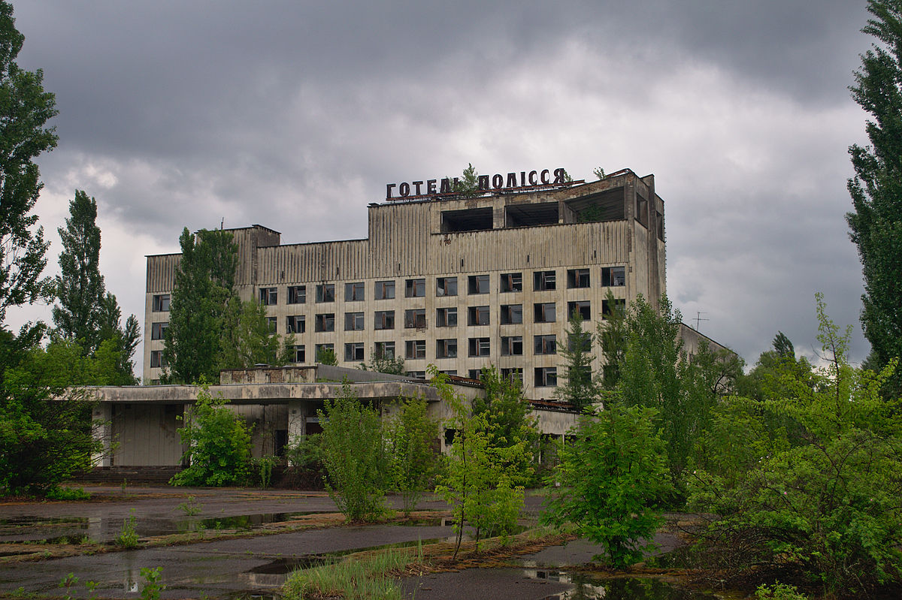
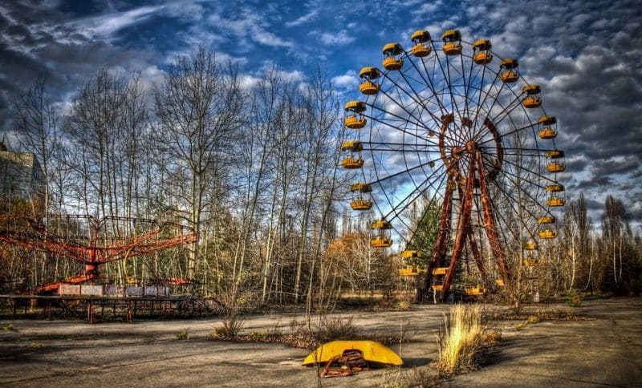

Visitez l'oblast de Kiev - Tchernobyl & Pripiat
Visitez l'oblast de Kiev - Tchernobyl & Pripiat

Tchernobyl

Pripiat

Conseil de la ville
la description de la ville
Prypiat, Pripiat ou Pripyat (en ukrainien Прип'ять) est une ville fondée en 1970, en République socialiste soviétique d'Ukraine. Elle se trouve à 2,6 km de la centrale nucléaire de Tchernobyl et à une dizaine de kilomètres au nord de Tchernobyl. Elle est donc située dans la zone d'exclusion de 30 km mise en place autour de la centrale après la catastrophe nucléaire de 1986. Tout en conservant le statut de ville, elle est désormais une ville fantôme, inhabitée, tout comme les villages proches de Novochepelytchi, Kotcharivka et Kopatchi, situés à 6 km de Prypiat. Prypiat est de nos jours supervisée par le ministère des situations d'urgence d'Ukraine.
Les endroits à visiter
- Radar "Douga" 
- Centrale nucléaire de Tchernobyl 
- Hôtel Polyssia 
- Le parc d'attractions Prypiat 
Gallerie